7. Gaussian basis functions¶
7.1. Introduction¶
Horton supports contracted Gaussian basis functions, which have in general the following form:
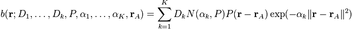
where 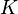 is the contraction length, 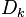 is a contraction coefficient, 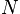 is a normalization constant, 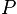 is a Cartesian polynomial, 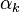 is an exponent and 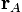 is the center of the basis function. The summation over 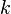 is conventionally called a contraction of primitive Gaussian basis functions. The normalization of each primitive depends on both the polynomial and the exponent and is defined by the following relation:
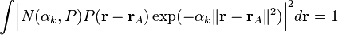
Likewise, the contraction coefficients are defined such that the total contraction satisfies the same normalization condition:
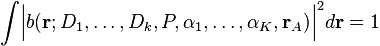
There are two common forms of the polynomial: Cartesian and pure (harmonic) basis functions. Both types will be defined below, together with some conventions that are needed for the implementation in Horton.
7.2. Cartesian¶
When the polynomial consists of a single term as follows:
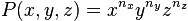
with 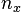, 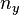, 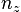, zero or positive integer powers, one speaks of Cartesian Gaussian basis functions. One refers to the sum of the powers as the angular momentum of the Cartesian Gaussian basis. The normalization constant is:
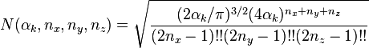
In practice one combines all basis functions of a given angular momentum (or algebraic order). A basis specification typically only mentions the total angular momentum, and it is assumed that all polynomials of that order are included in the basis set. The number of basis functions, i.e. the number of polynomials, for a given angular momentum, 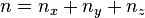, is 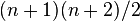. For the implementation, one must fix a certain ordering of these polynomials. In Horton, the ordering is simply alphabetical.
The first five angular momenta and the corresponding polynomials are listed in the table below.
| Symbol | Angular momentum | # | Polynomials |
|---|---|---|---|
| S | 0 | 1 | 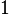 |
| P | 1 | 3 | 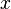, 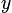, 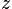 |
| D | 2 | 6 | 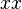, 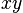, 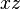, 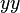, 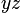, 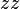 |
| F | 3 | 10 | 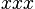, 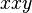, 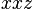, 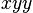, 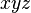, 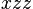, 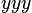, 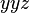, 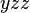, 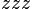 |
| G | 4 | 15 | 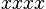, 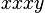, 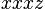, 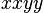, 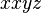, 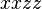, 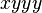, 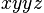, 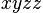, 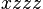, 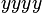, 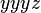, 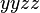, , |
7.3. Pure or Harmonic¶
When the polynomial is a real regular solid harmonic, one speaks of pure Gaussian basis functions:
where and are cosine and sine-like real regular solid harmonics, defined as follows:
where  are the regular solid harmonics, which have in general
complex function values. The index is a zero or positive. Note that in
, , , and is moved to the subscript to indicate that these are real functions. The
regular solid harmonics are derived from the standard spherical harmonics as
follows:
are the regular solid harmonics, which have in general
complex function values. The index is a zero or positive. Note that in
, , , and is moved to the subscript to indicate that these are real functions. The
regular solid harmonics are derived from the standard spherical harmonics as
follows:

(The Condon–Shortley phase is not used here.) Due to the presence of the factor , the real regular solid harmonics are homogeneous polynomials, i.e. linear combinations of the Cartesian polynomials defined in the previous section.
Real regular solid harmonics are used because their normalization over the angular degrees of freedom, i.e.
is compatible with the Cartesian s- and p-type polynomials from the previous section. The normalization constant of a pure Gaussian basis function is:
In practical applications, one always combines all the basis functions of a given angular momentum. A basis specification typically only mentions the total angular momentum, and it is assumed that all polynomials of that order are included in the basis set. The number of basis functions, i.e. the number of polynomials, for a given angular momentum, , is . For the implementation, one must fix a certain ordering of these polynomials. The ordering in Horton is based on the angular momentum number, . When , the cosine-like functions is preceded by the sine-like function.
The first five angular momenta and the corresponding polynomials are listed in the table below.
| Symbol | Angular momentum | # | Polynomials |
|---|---|---|---|
| S | 0 | 1 | |
| P | 1 | 3 | , , |
| D | 2 | 5 | , , , , |
| F | 3 | 7 | , , , , , , |
| G | 4 | 9 | , , , , , , , , |
7.4. Transformation from Cartesian to pure¶
Let us now derive convenient expressions for these real solid harmonics in terms of Cartesian coordinates. The function is the associated Legendre Polynomial. For positive we have:
where is the ordinary Legendre polynomial of order . Note that the factors are canceled out in the definition of the real solid harmonics. Substitution of these definitions leads to the following form for the regular solid harmonics:

For , the real regular solid harmonics are first written as follows:
It is conventional to factor out the -dependent part (which also has some pure -dependence). Making use of , one gets:
with
For the -dependence one has to following polynomials for the cosine and sine-like functions, respectively:
where we made use of  and . Putting it
all together, we have:
and . Putting it
all together, we have:
Also for the case  , one has a similar form:
, one has a similar form:
These expressions allow one to write the real solid harmonics in terms of a homogeneous polynomial of Cartesian coordinates. The following table is generated by the script tools/harmonics.py, which uses Sympy for the symbolic manipulations:
![C_{00}(x,y,z) & = 1 \\
C_{10}(x,y,z) & = z \\
C_{11}(x,y,z) & = x \\
S_{11}(x,y,z) & = y \\
C_{20}(x,y,z) & = - \frac{1}{2} r^{2} + \frac{3}{2} z^{2} \\
C_{21}(x,y,z) & = \sqrt{3} x z \\
S_{21}(x,y,z) & = \sqrt{3} y z \\
C_{22}(x,y,z) & = \frac{1}{2} \sqrt{3} \left(x^{2} - y^{2}\right) \\
S_{22}(x,y,z) & = \sqrt{3} x y \\
C_{30}(x,y,z) & = - \frac{3}{2} r^{2} z + \frac{5}{2} z^{3} \\
C_{31}(x,y,z) & = \frac{1}{6} \sqrt{6} x \left(- \frac{3}{2} r^{2} + \frac{15}{2} z^{2}\right) \\
S_{31}(x,y,z) & = \frac{1}{6} \sqrt{6} y \left(- \frac{3}{2} r^{2} + \frac{15}{2} z^{2}\right) \\
C_{32}(x,y,z) & = \frac{1}{2} \sqrt{15} z \left(x^{2} - y^{2}\right) \\
S_{32}(x,y,z) & = \sqrt{15} x y z \\
C_{33}(x,y,z) & = \frac{1}{4} \sqrt{10} \left(x^{3} - 3 x y^{2}\right) \\
S_{33}(x,y,z) & = \frac{1}{4} \sqrt{10} \left(3 x^{2} y - y^{3}\right) \\
C_{40}(x,y,z) & = \frac{3}{8} r^{4} - \frac{15}{4} r^{2} z^{2} + \frac{35}{8} z^{4} \\
C_{41}(x,y,z) & = \frac{1}{10} \sqrt{10} x \left(- \frac{15}{2} r^{2} z + \frac{35}{2} z^{3}\right) \\
S_{41}(x,y,z) & = \frac{1}{10} \sqrt{10} y \left(- \frac{15}{2} r^{2} z + \frac{35}{2} z^{3}\right) \\
C_{42}(x,y,z) & = \frac{1}{30} \sqrt{5} \left(- \frac{15}{2} r^{2} + \frac{105}{2} z^{2}\right) \left(x^{2} - y^{2}\right) \\
S_{42}(x,y,z) & = \frac{1}{15} \sqrt{5} x y \left(- \frac{15}{2} r^{2} + \frac{105}{2} z^{2}\right) \\
C_{43}(x,y,z) & = \frac{1}{4} \sqrt{70} z \left(x^{3} - 3 x y^{2}\right) \\
S_{43}(x,y,z) & = \frac{1}{4} \sqrt{70} z \left(3 x^{2} y - y^{3}\right) \\
C_{44}(x,y,z) & = \frac{1}{8} \sqrt{35} \left(x^{4} - 6 x^{2} y^{2} + y^{4}\right) \\
S_{44}(x,y,z) & = \frac{1}{8} \sqrt{35} \left(4 x^{3} y - 4 x y^{3}\right)](_images/math/fe0531d650e164269bd177d00ac4defbacd481c7.png)
Note that these functions are not normalized yet. The formatting of the list above is not great because of the limitations of Sympy’s latex printer.
The script tools/harmonics.py also generates the transformation matrices from Cartesian to pure basis functions. These do take into account the normalization.
![\left(\begin{array}{c}
X(C_{00})
\end{array}\right)
&=
\left(\begin{array}{c}
1 \\
\end{array}\right)
\left(\begin{array}{c}
X(1)
\end{array}\right)
\\
\left(\begin{array}{c}
X(C_{10}) \\ X(C_{11}) \\ X(S_{11})
\end{array}\right)
&=
\left(\begin{array}{ccc}
0 & 0 & 1 \\
1 & 0 & 0 \\
0 & 1 & 0 \\
\end{array}\right)
\left(\begin{array}{c}
X(x) \\ X(y) \\ X(z)
\end{array}\right)
\\
\left(\begin{array}{c}
X(C_{20}) \\ X(C_{21}) \\ X(S_{21}) \\ X(C_{22}) \\ X(S_{22})
\end{array}\right)
&=
\left(\begin{array}{cccccc}
- \frac{1}{2} & 0 & 0 & - \frac{1}{2} & 0 & 1 \\
0 & 0 & 1 & 0 & 0 & 0 \\
0 & 0 & 0 & 0 & 1 & 0 \\
\frac{1}{2} \sqrt{3} & 0 & 0 & - \frac{1}{2} \sqrt{3} & 0 & 0 \\
0 & 1 & 0 & 0 & 0 & 0 \\
\end{array}\right)
\left(\begin{array}{c}
X(xx) \\ X(xy) \\ X(xz) \\ X(yy) \\ X(yz) \\ X(zz)
\end{array}\right)
\\
\left(\begin{array}{c}
X(C_{30}) \\ X(C_{31}) \\ X(S_{31}) \\ X(C_{32}) \\ X(S_{32}) \\ X(C_{33}) \\ X(S_{33})
\end{array}\right)
&=
\left(\begin{array}{cccccccccc}
0 & 0 & - \frac{3}{10} \sqrt{5} & 0 & 0 & 0 & 0 & - \frac{3}{10} \sqrt{5} & 0 & 1 \\
- \frac{1}{4} \sqrt{6} & 0 & 0 & - \frac{1}{20} \sqrt{30} & 0 & \frac{1}{5} \sqrt{30} & 0 & 0 & 0 & 0 \\
0 & - \frac{1}{20} \sqrt{30} & 0 & 0 & 0 & 0 & - \frac{1}{4} \sqrt{6} & 0 & \frac{1}{5} \sqrt{30} & 0 \\
0 & 0 & \frac{1}{2} \sqrt{3} & 0 & 0 & 0 & 0 & - \frac{1}{2} \sqrt{3} & 0 & 0 \\
0 & 0 & 0 & 0 & 1 & 0 & 0 & 0 & 0 & 0 \\
\frac{1}{4} \sqrt{10} & 0 & 0 & - \frac{3}{4} \sqrt{2} & 0 & 0 & 0 & 0 & 0 & 0 \\
0 & \frac{3}{4} \sqrt{2} & 0 & 0 & 0 & 0 & - \frac{1}{4} \sqrt{10} & 0 & 0 & 0 \\
\end{array}\right)
\left(\begin{array}{c}
X(xxx) \\ X(xxy) \\ X(xxz) \\ X(xyy) \\ X(xyz) \\ X(xzz) \\ X(yyy) \\ X(yyz) \\ X(yzz) \\ X(zzz)
\end{array}\right)
\\
\left(\begin{array}{c}
X(C_{40}) \\ X(C_{41}) \\ X(S_{41}) \\ X(C_{42}) \\ X(S_{42}) \\ X(C_{43}) \\ X(S_{43}) \\ X(C_{44}) \\ X(S_{44})
\end{array}\right)
&=
\left(\begin{array}{ccccccccccccccc}
\frac{3}{8} & 0 & 0 & \frac{3}{140} \sqrt{105} & 0 & - \frac{3}{35} \sqrt{105} & 0 & 0 & 0 & 0 & \frac{3}{8} & 0 & - \frac{3}{35} \sqrt{105} & 0 & 1 \\
0 & 0 & - \frac{3}{28} \sqrt{70} & 0 & 0 & 0 & 0 & - \frac{3}{28} \sqrt{14} & 0 & \frac{1}{7} \sqrt{70} & 0 & 0 & 0 & 0 & 0 \\
0 & 0 & 0 & 0 & - \frac{3}{28} \sqrt{14} & 0 & 0 & 0 & 0 & 0 & 0 & - \frac{3}{28} \sqrt{70} & 0 & \frac{1}{7} \sqrt{70} & 0 \\
- \frac{1}{4} \sqrt{5} & 0 & 0 & 0 & 0 & \frac{3}{14} \sqrt{21} & 0 & 0 & 0 & 0 & \frac{1}{4} \sqrt{5} & 0 & - \frac{3}{14} \sqrt{21} & 0 & 0 \\
0 & - \frac{1}{14} \sqrt{35} & 0 & 0 & 0 & 0 & - \frac{1}{14} \sqrt{35} & 0 & \frac{3}{7} \sqrt{7} & 0 & 0 & 0 & 0 & 0 & 0 \\
0 & 0 & \frac{1}{4} \sqrt{10} & 0 & 0 & 0 & 0 & - \frac{3}{4} \sqrt{2} & 0 & 0 & 0 & 0 & 0 & 0 & 0 \\
0 & 0 & 0 & 0 & \frac{3}{4} \sqrt{2} & 0 & 0 & 0 & 0 & 0 & 0 & - \frac{1}{4} \sqrt{10} & 0 & 0 & 0 \\
\frac{1}{8} \sqrt{35} & 0 & 0 & - \frac{3}{4} \sqrt{3} & 0 & 0 & 0 & 0 & 0 & 0 & \frac{1}{8} \sqrt{35} & 0 & 0 & 0 & 0 \\
0 & \frac{1}{2} \sqrt{5} & 0 & 0 & 0 & 0 & - \frac{1}{2} \sqrt{5} & 0 & 0 & 0 & 0 & 0 & 0 & 0 & 0 \\
\end{array}\right)
\left(\begin{array}{c}
X(xxxx) \\ X(xxxy) \\ X(xxxz) \\ X(xxyy) \\ X(xxyz) \\ X(xxzz) \\ X(xyyy) \\ X(xyyz) \\ X(xyzz) \\ X(xzzz) \\ X(yyyy) \\ X(yyyz) \\ X(yyzz) \\ X(yzzz) \\ X(zzzz)
\end{array}\right)](_images/math/050242ee1fa340f88adcad4aca59f249a33fb5ce.png)
These transformations are implemented in horton/cartpure.c with sparse matrix products for angular momenta up to .
7.5. Recursion relations for real regular solid harmonics¶
Recurrence relations for can be derived from the recurrence relations for the associated Legendre polynomials:
Initialization
For
For and
Recurrence relations for the functions and are easily derived from scratch:
Hence, one gets:
Initialization
For